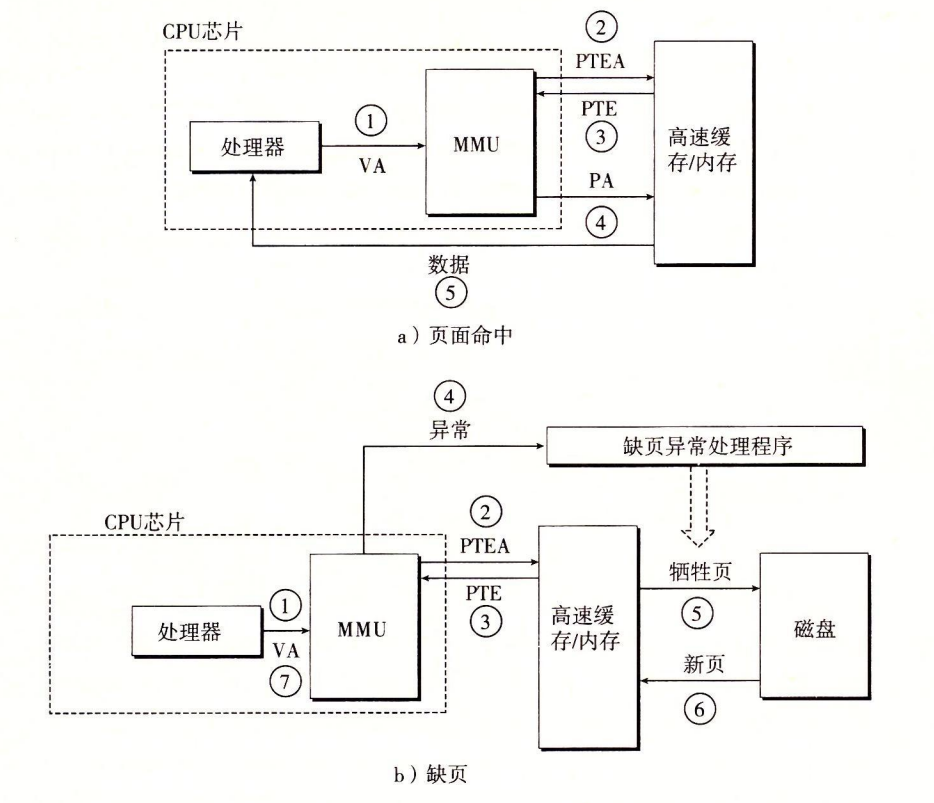

虚拟内存9.6
第 1 步：处理器生成一个虚拟地址，并把它传送给 MMU。 第 2 步：MMU 生成 PTE 地址，并从高速缓存/主存请求得到它。 第 3 步：高速缓存/主存向 MMU 返回 PTE。 第 4 步：MMU 构造物理地址，并把它传送给高速缓存/主存。 第 5 步：高速缓存/主存返回所请求的数据字给处理器。

虚拟内存9.7
Linux内核下的缺页异常处理步骤：
-
判断给定的虚拟地址值本身是否合法。判断方法是把给定值和区域结构链表的每个结点的起止点比较。如果结果不合法，则触发一个段错误，终止进程。
-
判断对这个地址进行的操作是否合法。如果不合法，触发一个保护异常并终止进程。
-
如果前两步骤均未终止进程，则内核选择一个牺牲页面。如果该页面之前被修改过，则先写回磁盘。之后换入新的页面，更新页表。缺页处理程序返回，并把控制流交还给引发缺页异常的指令。之后MMU能正常地翻译给定的虚拟地址。
虚拟内存9.8
Linux 通过将一个虚拟内存区域与一个磁盘上的对象（object）关联起来，以初始化这个虚拟内存区域的内容，这个过程称为内存映射（memory mapping），虚拟内存区域可以映射到两种类型的对象中的一种： Linux 文件系统中的普通文件：一个区域可以映射到一个普通磁盘文件的连续部分，例如一个可执行目标文件。文件区（section）被分成页大小的片，每一片包含一个虚拟页面的初始内容。因为按需进行页面调度，所以这些虚拟页面没有实际交换进入物理内存，直到 CPU 第一次引用到页面（即发射一个虚拟地址，落在地址空间这个页面的范围之内）。如果区域比文件区要大，那么就用零来填充这个区域的余下部分。 匿名文件：一个区域也可以映射到一个匿名文件，匿名文件是由内核创建的，包含的全是二进制零。CPU 第一次引用这样一个区域内的虚拟页面时，内核就在物理内存中找到一个合适的牺牲页面，如果该页面被修改过，就将这个页面换出来，用二进制零覆盖牺牲页面并更新页表，将这个页面标记为是驻留在内存中的。注意在磁盘和内存之间并没有实际的数据传送。因为这个原因，映射到匿名文件的区域中的页面有时也叫做请求二进制零的页（demand-zero page）。
虚拟内存9.9
申请（虚拟）内存空间时，可以使用mmap、munmap函数，不过使用经过封装的动态内存分配器，更方便，移植性更好。
动态内存分配器维护一个进程的虚拟内存区域。对每个进程，内核维护一个变量brk，是一个指向堆顶的指针。
分配器将堆视为一组不同大小的块的集合。每个块是一个连续的虚拟内存片，或是已分配的，或是空闲的。
分配器存在两种风格：显式分配器、隐式分配器。显式分配器的典型例子就是malloc、free。隐式分配器广泛被如Java、Lisp等依赖垃圾回收机制的高级语言应用。本节之后讨论的内容都属于显式分配器。
unistd.h内声明了sbrk函数，使用该函数手动扩展和收缩堆大小。
显式分配器在设计时需要满足如下要求：
处理任意请求序列。分配器不可以假设未来任何分配和释放请求的顺序。 立即响应请求。意味着缓存、重新排列请求等策略在分配器设计中不可用。 只使用堆。为保证分配器扩展性，分配器使用的任何非标量数据结构（是啥我也不知道）都必须保存在堆中。 对齐块。分配器所分配的块必须满足操作系统和硬件的字节对齐要求，使块可以保存任何数据对象。 不修改已分配的块。只能操作或改变空闲块，意味着压缩已分配块这类技术在分配器设计中无法使用。